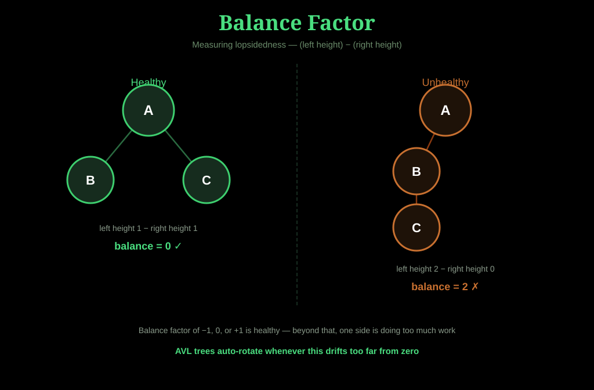
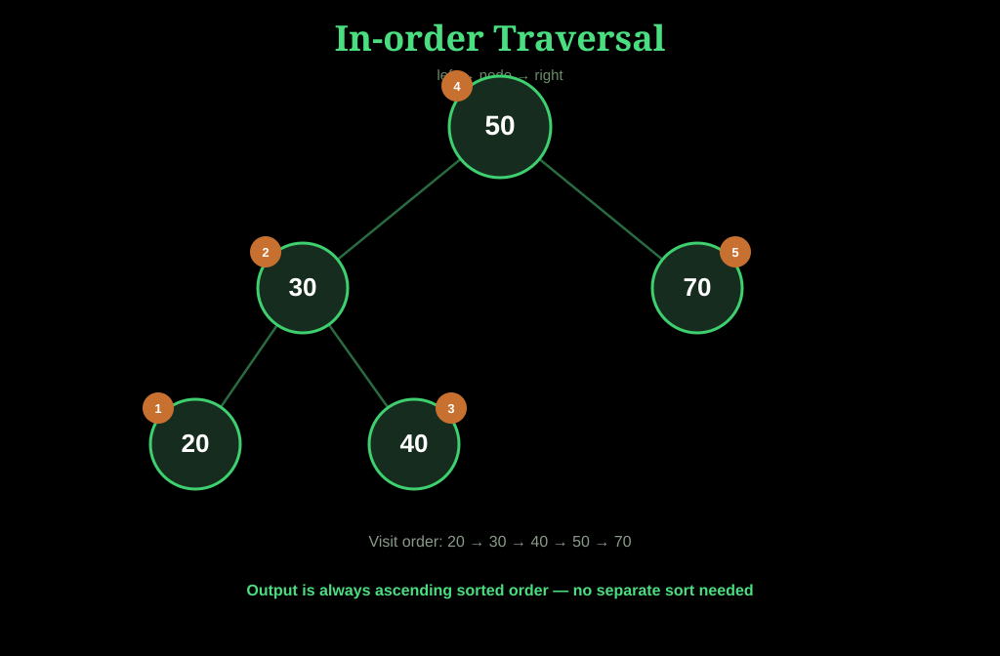

Theory & Core Concepts
The bedrock, before anything else
Definitions of nodes, edges, depth, height, balance factors. The BST invariant. Tree traversals — in-order, pre-order, post-order — and why each matters. This section builds the mental model everything else rests on.
The Bedrock, Before Anything Else
Every other stage — the lectures, books, and research papers — assumes you already have this mental model. These five concepts are the foundation everything else rests on.
Anatomy of a Tree
Every tree starts with a node — a box holding a value, with up to two arrows pointing down to its children: one left, one right. The very top node is the root, the one node with no parent. A node with no children is called a leaf — these sit at the outer edges of the tree. Any node that isn't a leaf is called an internal node. The connection between a parent and child is called an edge.
An important distinction: a Binary Tree just means each node has at most two children — no ordering rule attached. A Binary Search Tree (BST) is a binary tree with one extra rule layered on top, and that one rule is what turns a simple hierarchy into something you can search efficiently.
The One Rule That Makes a Tree Searchable
For any node, everything in its left subtree is smaller, and everything in its right subtree is bigger. This isn't just true at the root — it repeats at every single node in the tree, recursively.
Why this matters: it means you never have to check the whole tree to find something. At each node, one comparison tells you whether to go left or right, cutting the remaining search space roughly in half each time. This is the entire reason a BST can search in O(log n) time instead of checking every element one by one like a plain list.

How Tall or Efficient a Tree Is
- Depth of a node = how many edges lie between it and the root. The root itself has depth 0.
- Height of the tree = the longest path from the root down to any leaf — essentially, how many levels deep the tree goes.
- Shorter height means faster searches, insertions, and deletions, because operations typically take time proportional to height, not the total number of nodes.
- A well-balanced tree with N nodes has a height around log₂(N). A poorly built one can have a height of N — at which point it behaves exactly like a linked list, and all the speed benefits disappear.

Measuring Lopsidedness
For any node, the balance factor is: (height of left subtree) − (height of right subtree).
- A balance factor of −1, 0, or +1 is generally considered healthy.
- A larger gap means one side is much deeper — searches on the heavy side take longer than they should.
- This single number is the whole foundation behind AVL trees, which automatically perform rotations whenever a node's balance factor drifts too far from zero — keeping the tree efficient regardless of insertion order.

Three Ways to Walk Through Every Node
A traversal visits every node exactly once, but the order changes what the output is useful for.

Because of the BST invariant, this always visits nodes in ascending sorted order. You get a fully sorted list of values just by walking the tree once — no separate sorting step needed.

Visits the root before anything else. This is the natural order to copy or serialize a tree — you always know a parent before its children, which is exactly what's needed to rebuild the same structure elsewhere.

Visits the root last. This ordering is what you want when deleting an entire tree safely — you remove all of a node's children before removing the node itself, avoiding orphaned references.

Test Conceptual Mastery
Answer in your own words. Gemini AI will evaluate your conceptual understanding and log any flagged gaps.
Explain in your own words why a Binary Search Tree's in-order traversal always returns values in sorted order.